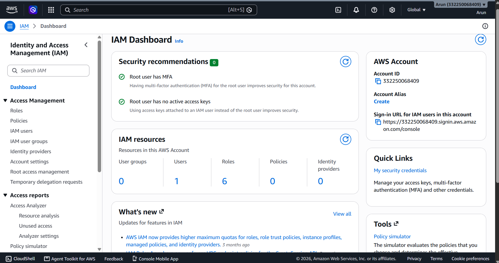
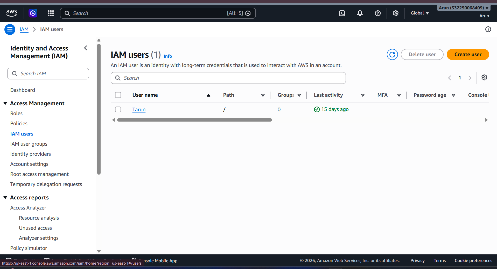
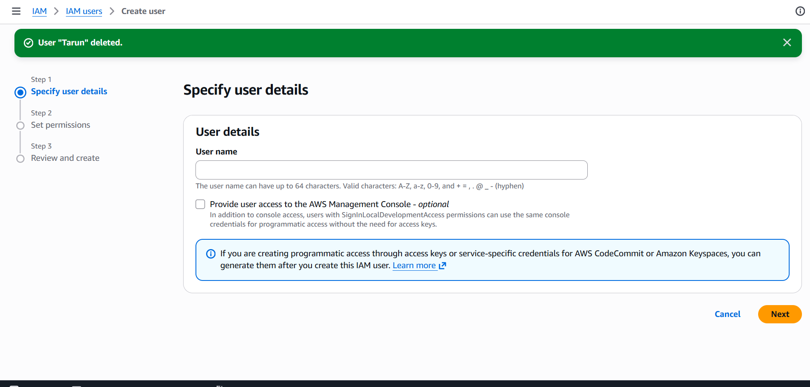
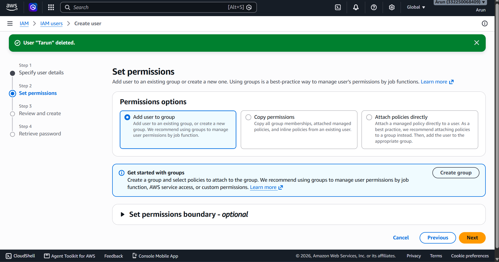
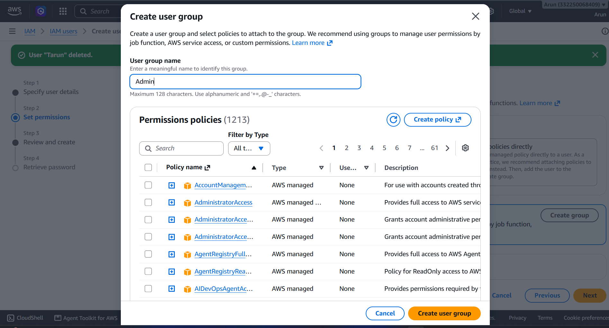
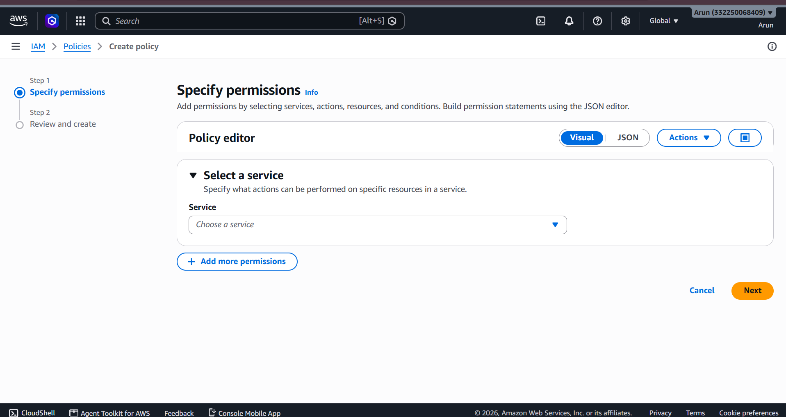

🔐 AWS Identity and Access Management (IAM)
Comprehensive guide: core concepts, dashboard, user creation, groups, policies & best practices
What is AWS IAM?
AWS Identity and Access Management (IAM) is a web service that helps you securely control access to AWS resources. IAM enables you to centrally manage permissions that control which AWS resources users can access, who can be authenticated (signed in), and who is authorized (has permissions) to use resources.
Core Concepts of IAM
- Users — An IAM User is an entity created within AWS to represent a person or application interacting with AWS resources.
- User Groups — A collection of IAM Users. Groups allow you to specify permissions for multiple users at once, making permissions management easier.
- Roles — An IAM identity that you can create in your account that has specific permissions, intended to be assumed by anyone who needs it (users, applications, or AWS services like EC2).
- Policies — JSON documents that explicitly define permissions (Allow or Deny) for actions, resources, and conditions.
Navigating the IAM Dashboard
To access IAM, log into the AWS Management Console, search for IAM in the search bar, and open the IAM Dashboard.

Key Dashboard Components
- Security Recommendations — Displays real-time security alerts (e.g., verifying Root User MFA and Access Keys).
- IAM Resources Summary — Quick counter for total User Groups, Users, Roles, Policies, and Identity Providers in your account.
- AWS Account Details — Displays your AWS Account ID, Account Alias, and custom IAM User Sign-in URL.
- Quick Links — Access security credentials and policy simulators easily.
Step-by-Step: Creating an IAM User
Step 3.1: Navigate to IAM Users
- From the left-hand navigation sidebar under Access Management, click on IAM users.
- Click the yellow Create user button located on the top-right corner.

Step 3.2: Specify User Details
- User name: Enter a unique name for the user (up to 64 characters; valid characters include
A-Z,a-z,0-9, and+=,.@-). - Console Access (Optional): Check Provide user access to the AWS Management Console if the user requires web login credentials.
- Choose whether to assign an autogenerated password or set a custom password, and decide if the user must reset their password on next sign-in.
- Click Next to proceed.

Step 3.3: Set Permissions
AWS provides three primary methods for assigning permissions to a new user:
| Permission Option | Description | Recommended Usage |
|---|---|---|
| Add user to group | Assigns the user to existing or newly created IAM Groups. | Best Practice: Simplifies access governance. |
| Copy permissions | Copies all permissions and group memberships from an existing user. | Useful when onboarding team members with identical roles. |
| Attach policies directly | Directly attaches AWS Managed or Custom Policies to the user. | Use sparingly for one-off permission requirements. |

Creating & Managing User Groups
Using IAM User Groups is the recommended best practice for organizing users by job function
(e.g., Admin, Developers, Auditors).
Steps to Create a User Group
- On the Set permissions page (or via IAM User Groups menu), click Create group.
- Enter a descriptive User group name (e.g.,
Admin). - Search and select the permissions policies to attach (e.g.,
AdministratorAccessfor full administrative rights). - Click Create user group.

Creating Custom IAM Policies
If AWS Managed Policies do not meet your exact requirements, you can create custom policies following the Principle of Least Privilege.
Steps to Create a Custom Policy
- In the left sidebar, navigate to Policies and click Create policy.
- Select the Policy Editor mode:
- Visual Editor: Select services, actions (Read, Write, List), resources (ARNs), and request conditions using a graphical user interface.
- JSON Editor: Write or paste a custom JSON policy document directly.
- Review, name your policy, and click Create policy.

AWS IAM Best Practices
- Lock Down the Root User — Enable Multi-Factor Authentication (MFA) and do not use the root account for daily operational tasks.
- Follow Principle of Least Privilege — Grant users only the minimum permissions necessary to perform their job duties.
- Manage Access via Groups — Attach policies to User Groups rather than individual users.
- Use Roles for Applications & EC2 — Avoid hardcoding access keys; assign IAM Roles to AWS services.
- Rotate Credentials Regularly — Periodically review and rotate password policies and IAM access keys.